¿Quién destronó a quién?
 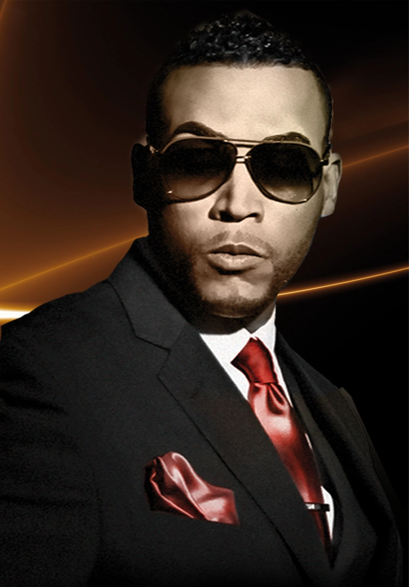
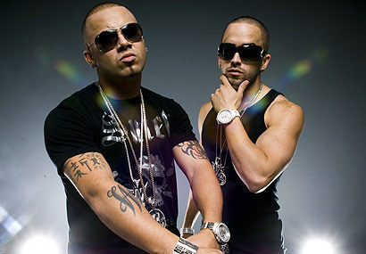
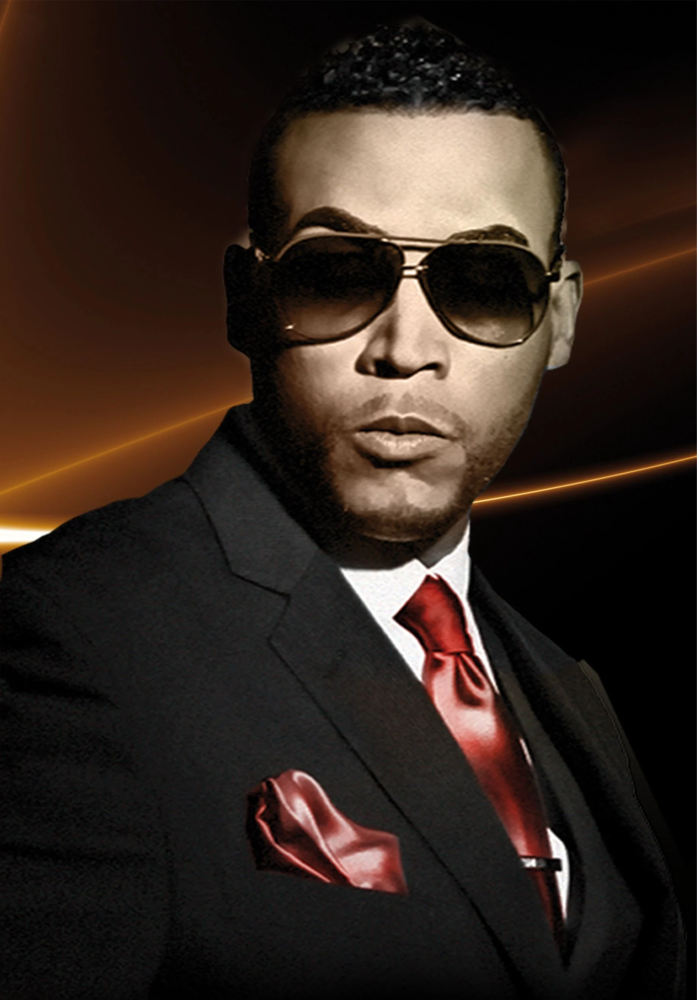
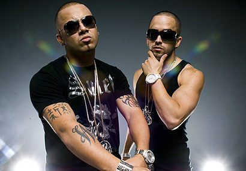
Manifestandose como una variante del reggae, fusionado con hip-hop, el reguetón surgió en países latinoamericanos como Panamá y Puerto Rico. Fue este último quien lo ayudaría a catapultarse a la cima de la industria musical hoy en día. Artistas pioneros de este género como Héctor el Father,Tego Calderón, Nicky Jam, Daddy Yankee, Don Omar, Wisin y Yandel, entre otros, lo elevaron a lugares nunca antes visto.
En el año 2002, Hector y Tito se coronaron con su tercer álbum "A LA RECONQUISTA", el cual daría inicio a la época dorada del reggaetón y a su comercialización masiva, vendiendo más de 200 mil copias en Estados Unidos con temas como Felina y Gata Salvaje junto a un joven Daddy Yankee y Nicky Jam.
Ese mismo año, Daddy Yankee estrenó "EL CANGRI.COM" álbum que se convirtió en el más vendido en Puerto Rico y tiene canciones muy icónicas como Latigazo y Ella Esta Soltera.
Pero de todos estos discos hubo uno que salió a finales de año y que cambiaría el género para siempre
2003: El que se coronó como el mejor álbum ese año indiscutiblemente fue "EL ABAYARDE" de Tego Calderon que fue estrenado en P.R en noviembre del 2002 vendiendo más de 50,000 copias. El proyecto fue tan exitoso que fue ampliado a un LP en julio de 2003 y distribuido a nivel global, esto convirtió a Tego en el primer exponente hispano de rap y reggaetón que encontró cabida en las programaciones radiales de Estados Unidos. Gracias a esto, "El Abayarde" registró ventas superiores a las 300,000 copias y obtuvo una nominación al Grammy Latino.
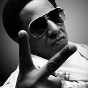Este disco es una auténtica reliquia del reggaetón debido a la fusión con ritmos de salsa y bomba, y la temática social que deja de lado las letras explícitas para hablar de lo que se vive en la calle. Algunos de sus éxitos más memorables fueron “Pa Que Retozen”, “Al natural”, “Abayarde”, “Dominicana”, “Cambumbo” y “Guasa guasa”.
Sin embargo, otro que no se quedaría atrás fue "THE LAST DON" de Don Omar que de la mano de Hector “El Father”, probablemente lanzó el álbum debut más importante del género, ya que en el 2004 había vendido 500 mil copias en los Estados Unidos , a día de hoy cuenta con más de 4 millones de copias vendidas a nivel mundial. Algunas de sus melodías más resaltantes fueron Dale Don Dale y Dile
Y no podemos dejar de darle una mención honorífica a "MAS FLOW" de los productores Luny Tunes junto a Noriega, que vendió más de medio millón de copias a nivel mundial y definió el sonido estándar de la época dorada del reggaeton debido a que presentó estructuras de canciones y estilos de producción que influirían en la mayoría de las grabaciones del género en los años siguientes. El éxito del álbum también se debió, en parte, por la participación de los artistas más importantes del reggaeton para ese entonces como Daddy Yankee, Don Omar, Tego Calderón, Wisin & Yandel, Hector & Tito, Zion & Lennox, Baby Ranks, Nicky Jam, Trebol Clan, solo por mencionar algunos. Entre los temas más recordados del disco tenemos “Cojela qué va sin Jockey” de Daddy Yankee, “Metele sazon” de Tego Calderon y “Hay algo en ti” de Zion y Lennox.
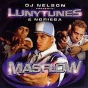Ese mismo año, Héctor “El Father” crearía su propia disquera y produciría el álbum "LOS BACATRANES" de Trebol Clan, con hits como el remix de “Agarrala”, “No le temas a el”, “Amor prohibido” y “Gata Fiera”. Haciéndole competencia y contribuyendo al boom del reggaetón de ese año Zion y Lennox lanzaron "MOTIVANDO A LA YAL" con temas que corearemos por siempre como Quiero tenerte, Doncella, Bandida y Yo voy con Daddy Yankee. Quien diría que este sería un año dorado para el reggaetón y que a mitad de este llegaría a nuestros oídos el álbum más vendido en la historia del mismo, alcanzando faclimente las 3 millones de copias vendidas ¿Adivinas de cuál estoy hablando? Pues si, de "BARRIO FINO" de Daddy Yankee?.
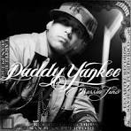En el género urbano, se marca un antes y un después de Barrio Fino, pues se estableció un nuevo formato en la radio, sonando temas como 'Tu príncipe'con Zion y Lennox, 'No me dejes solo'con Wisin y Yandel, 'Lo que pasó ,pasó' y por supuesto 'La Gasolina' Música
Año 2005: A inicios de este año volverían los productores de Luny Tunes con el lanzamiento de "Mas Flow 2", el cual capturó un momento musical importante y clave del reggaetón, juntando a sus mejores exponentes en su mejor momento. Además, de ser una pieza importante en la consolidación del genero en el mercado. Fue uno de los pocos discos en ser certificado disco de oro en Estados Unidos (por mas de 500.000 copias vendidas) y vendió mas de un millón de copias a nivel mundial, ayudando a que muchos artistas contenidos en este disco, obtuviesen exposición internacional.
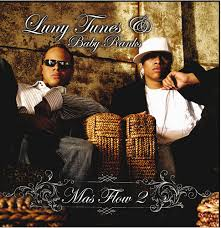Sin embargo quien se llevaría la corona este año sería el dúo Wisin y Yandel con el lanzamiento de su albúm "Pal Mundo" con alrededor de 2 millones de copias vendidas , este disco ayudó al dúo a estableceerse como una de las caras del género y llegar al nivel de Daddy Yankee y Don Omar en términos de Popularidad, destacando numerosas canciones como "Llamé pa verte", "Mirala bien", "Noche de sexo"con Aventura, "Mayor que yo 2" y "Paleta" con Daddy Yankee
Año 2006 El hecho de juntar a Daddy Yankee, Hector el Father, Wisin & Yandel y Don Omar, en una sola cancion "Royal Rumble", en el 2006, cuando todos en el momento mas importantes de su carrera y en la cúspide de la época dorada del reggaeton, da una idea del poder que tenían los productores Luny Tunes a mediados de la decada del 2000s. En Mas Flow: Los Benjamins, junto a entonces prospecto Tainy, Lune Tunes presentan una versión menos cruda, mas refinada, y comercial del reggaetón.Aunque 300.000 copias no esta nada mal, no eran la cifras esperadas por la disquera.
King of Kings es, musicalmente hablando, el álbum mas completo del reggaetón, conteniendo todo tipo de elementos musicales que van desde Dance-Hall (como el clásico "Salió el Sol"), Rap hasta Salsa y tocando temas desde la tiradera, el desamor y problemáticas sociales sensibles (escuchar "Angelito y Muñecas de Porcelana"). Este disco demostró a que Don Omar, es un artista conceptual dividendo su carrera musical en etapas y eras visuales acorde a los conceptos de los discos. Durante la época de King of Kings, Don Omar paso de ser un maleante a un caballero medieval con espadas y armaduras en los videos musicales. En términos de ventas, vendió mas de 500.000 copias en Estados Unidos, 50.000 en España y disco de oro y platino en Chile y Argentina. El éxito tanto en la critica como comercial, puso a Don Omar entre las principales caras internacionales del Reggaeton y al mismo nivel de popularidad de Daddy Yankee.
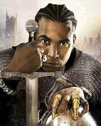Año 2007 En este año bajaron estrepitosamente las ventas fisicas de los discos, cosa que al parecer no le importó a Daddy Yankee el cual lanzaría "El Cartel: The Big Boss", alcanzando las 250 mil copias vendidas, logro que alcanzaría por tercer año consecutivo(2005 y 2006 con Barrio Fino).
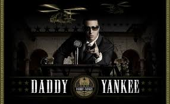Wisin y Yandel sacarían a finales del 2007 su álbum "Los Extraterrestres", el cual no alcanzaría su popularidad hasta 2008. Su hit "Sexy Movimiento" constituyó la transcición del reguetón a una nueva variante musical que el género urbano no había explorado todavía: el "electropop",vendiendo 1.5 millones de copias a nivel mundial. Otro albúm que brilló este año fue "Talento de Barrio" vendiendo más de 1 millón de copias en todo el mundo, el disco cuenta con auténticas joyas del género como "Pose", "Somos de Calle", "Llamado de Emergencia" y "Que tengo que hacer".
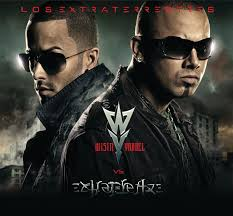Para el 2009 Wisin y Yandel optaron por seguir la linea de electropop y les funciono increiblemente en su nuevo álbum "La Revolución", pues llegaron a vender 3 millones de copoias y sumaron a su lista de clásicos un nuevo hit llamado "Abusadora".
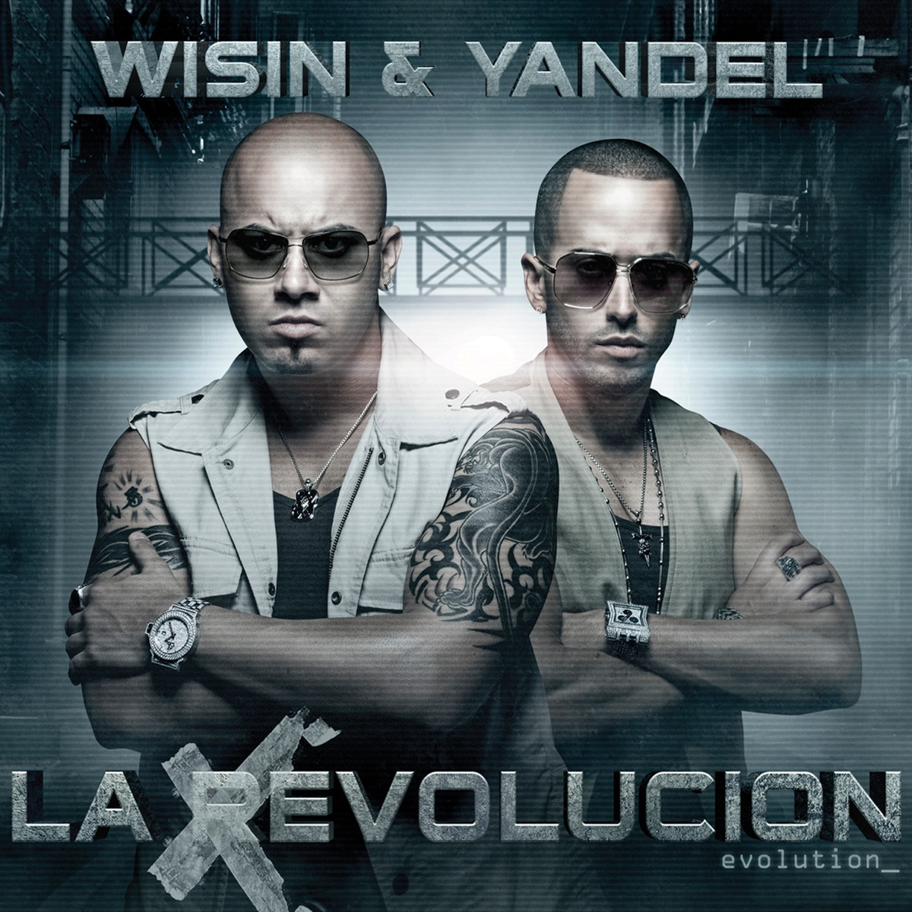